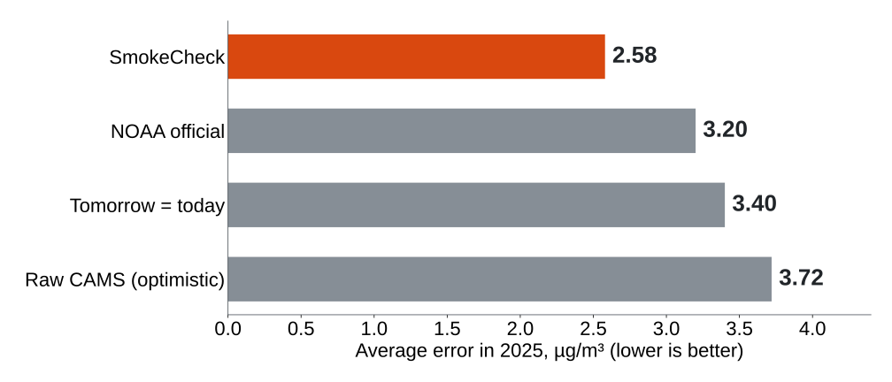
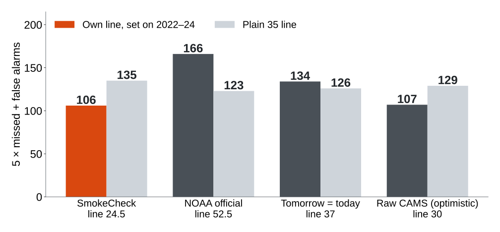
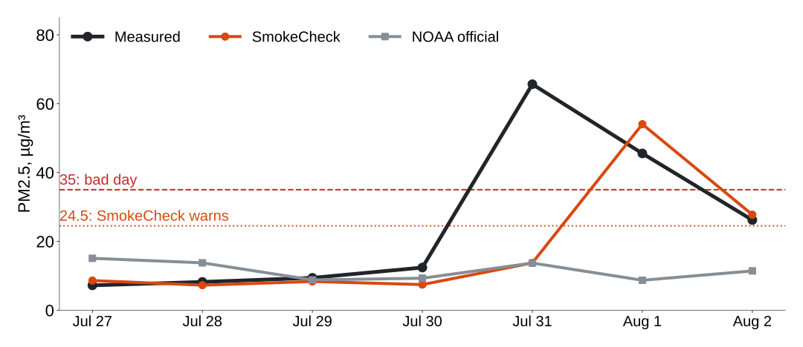

Aiden
AI + Climate · Veritas AI Hackathon
SmokeCheck:
practice outside, or move indoors?
83.7
Milwaukee, July 31, 2025
measured PM2.5 (µg/m³)
13.4
NOAA's official forecast
the day before
EPA's 24-hour limit is 35.
Aiden
One decision, made the evening before
- User: a Midwest high-school athletic director
- Input: a city and tomorrow's date
- Output: practice outside or move indoors,
with the PM2.5 forecast and an 80% likely range
- Six cities: Chicago, Milwaukee, Madison, Minneapolis, Detroit, St. Louis
Aiden · live demo
Switch to the app
Milwaukee, Jul 31 → Chicago, Jul 31 → Chicago, Aug 1
If the app fails: next slide, or play the recorded video
Backup · only if the demo fails
The demo, in three days
Milwaukee · Jul 31
Move indoors
SmokeCheck 26.8 (line 24.5)
NOAA 13.4
Measured 83.7
Our catch
Chicago · Jul 31
Practice outside
SmokeCheck 13.7 (8.8–20.6)
NOAA 13.7
Measured 65.6
Our miss, and NOAA's
Chicago · Aug 1
Move indoors
SmokeCheck 54.0
NOAA 8.7
Measured 45.5
Smoke lingers: our catch
Abhiddyu
How it works
- Inputs known the evening before: EPA monitors here and in 5 other cities, NOAA smoke maps, today's CAMS estimate, tomorrow's weather forecast
- Model: average of Ridge regression (predicts the level) and gradient-boosted trees (predict the change from today)
- Train Aug 2022 – Dec 2024 · test all of 2025, once, never shuffled
CAMS values are model estimates, not measurements.
Abhiddyu
19% lower error than NOAA's official forecast

2025, six cities, 2,190 city-days. No warning line involved. *CAMS archive partly "sees" the day's smoke.
Abhiddyu
Warning cost: a missed bad day = 5 false alarms

Every forecast runs low on smoke days, so each gets its own line from the same rule on 2022–24.
Best line picked in hindsight: SmokeCheck 102 · tomorrow = today 106 · NOAA 118.
Abhiddyu
Where it fails: smoke arriving overnight

Arrival days caught: 6 of 21 · lingering days caught: 12 of 14 (of 35 bad days in 2025)
Abhiddyu
What we learned: the cheapest line is noise
- Old rule: take the single cheapest warning line on 2022–24
- Adding one decimal place to the readings (at most 0.005 µg/m³) moved it from 24 to 29.5
- New rule, written down before we ran it: 200 copies of 2022–24 drawn in whole weeks, cheapest line on each, take the median
- Same rule for every forecast. Ours: 24.5
Aiden
Why it matters, and what's next
Against NOAA's official day-ahead forecast, SmokeCheck's error is 19% lower, and its warnings cost 106 against NOAA's 123 at the EPA's 35 line.
- Next: more smoky cities (e.g. Duluth) to fix arrival days
- Forecast practice hours, 3–6 PM, and test with a real athletic director
During Q&A
Sources
- Data: EPA AirData daily PM2.5 · NOAA NAQFC day-ahead forecast (AWS Open Data) · NOAA HMS smoke maps · CAMS via Open-Meteo Air Quality API · Open-Meteo Historical Forecast and Previous Runs APIs
- Libraries: scikit-learn 1.9.1, pandas, NumPy, matplotlib, pyshp, eccodes, jupytext, Gradio, Plotly
- Starting point: Veritas AI suggested project 4.3.2
- AI tools: Claude (Anthropic), through Claude Code, wrote most of the code and drafted the write-up; we chose the project and the experiments, and read all the code